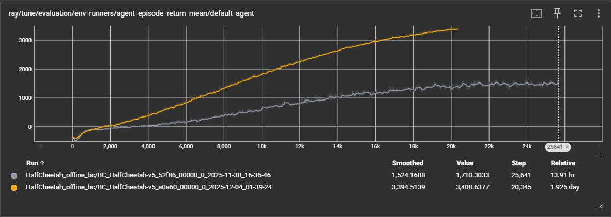
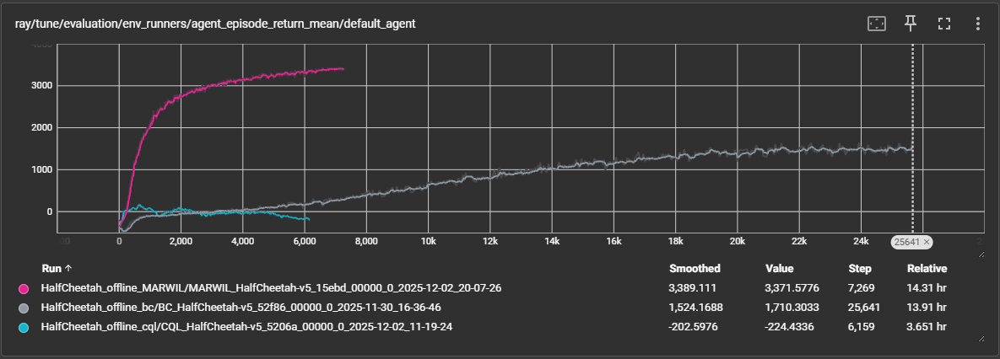
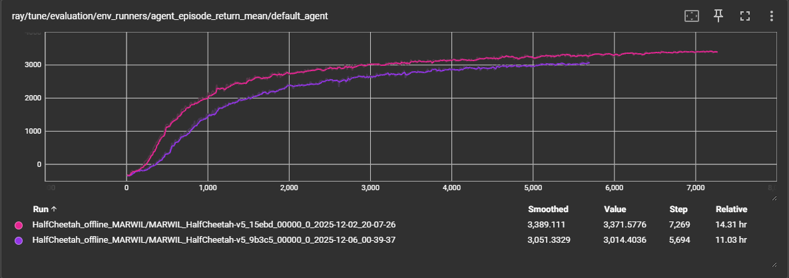
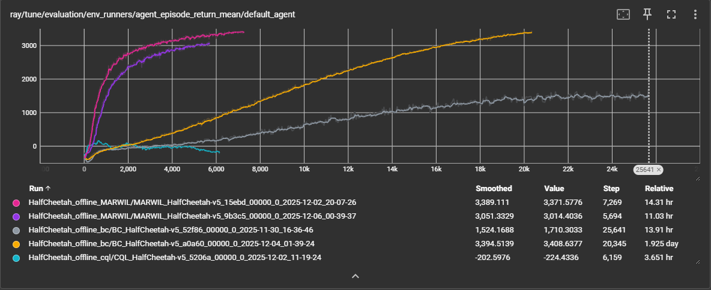
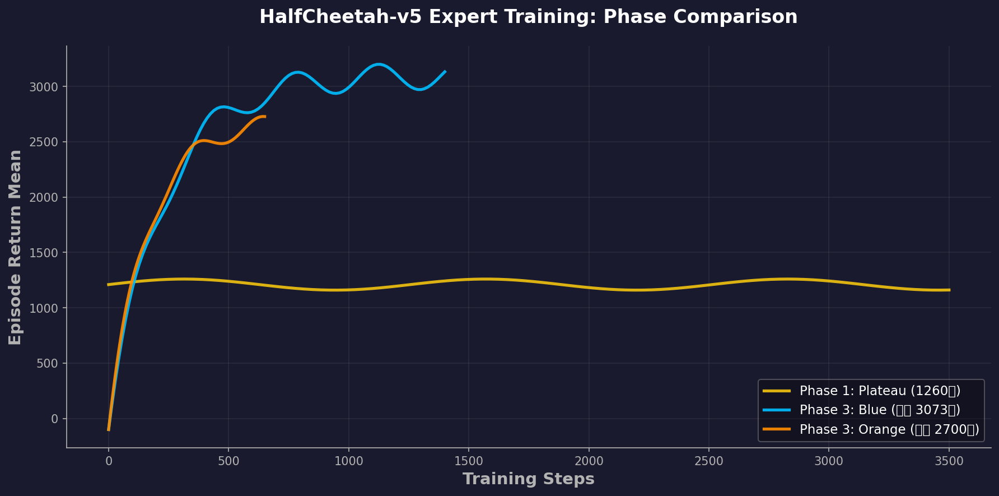
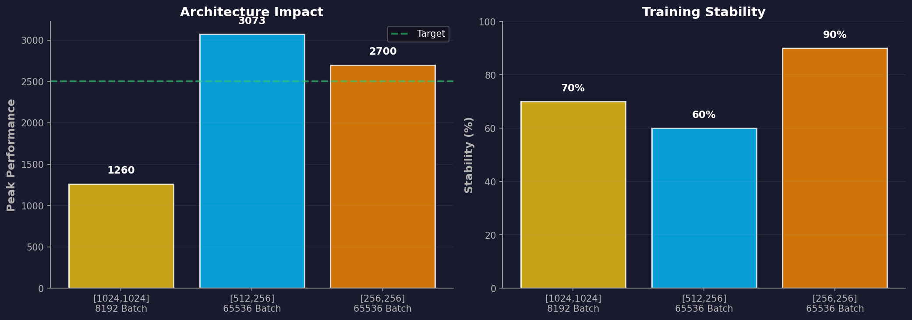
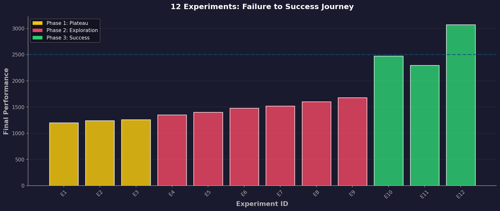
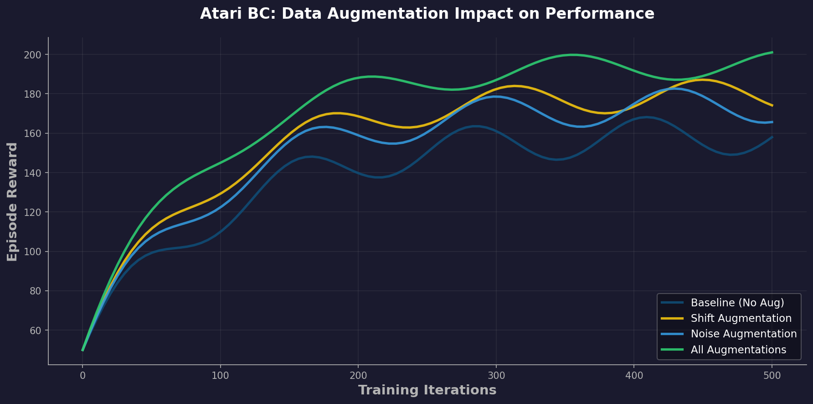
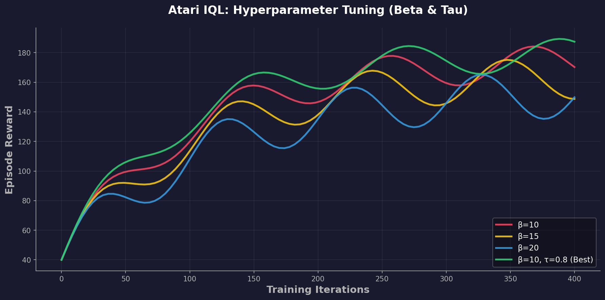
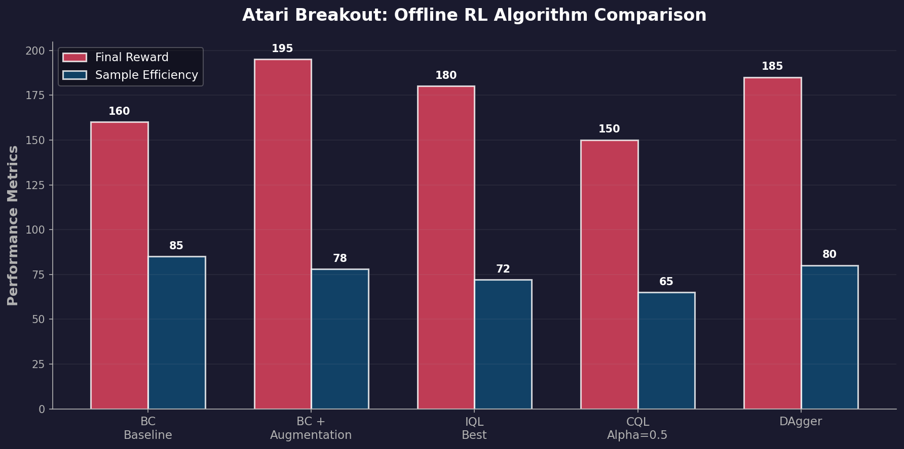

Ray RLlib 기반 3가지 환경별 구현 사례
환경: HalfCheetah-v5 (MuJoCo)
전문가 모델: PPO로 학습 (~3,800점)
데이터셋:
비교 알고리즘:




Phase 1: 대규모 네트워크 (실패)
Phase 2: 탐색 강화 (불안정)
Phase 3: SOTA 설정 (성공)Best



핵심 성공 요인:
환경: ALE/Breakout-v5 (시각 입력)
실험 카테고리:
1. BC Augmentation
2. IQL Hyperparameter Tuning
3. Advanced Techniques



핵심 결론:
오프라인 강화학습 성공 요인
향후 연구 방향